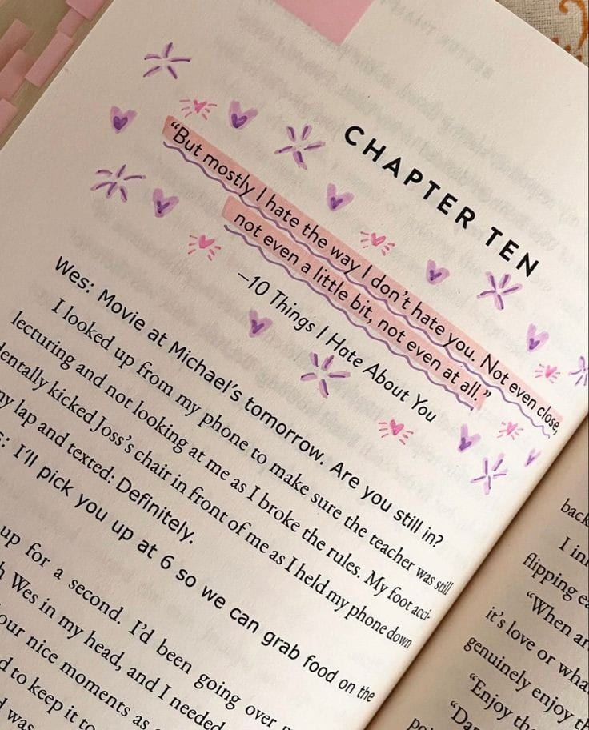
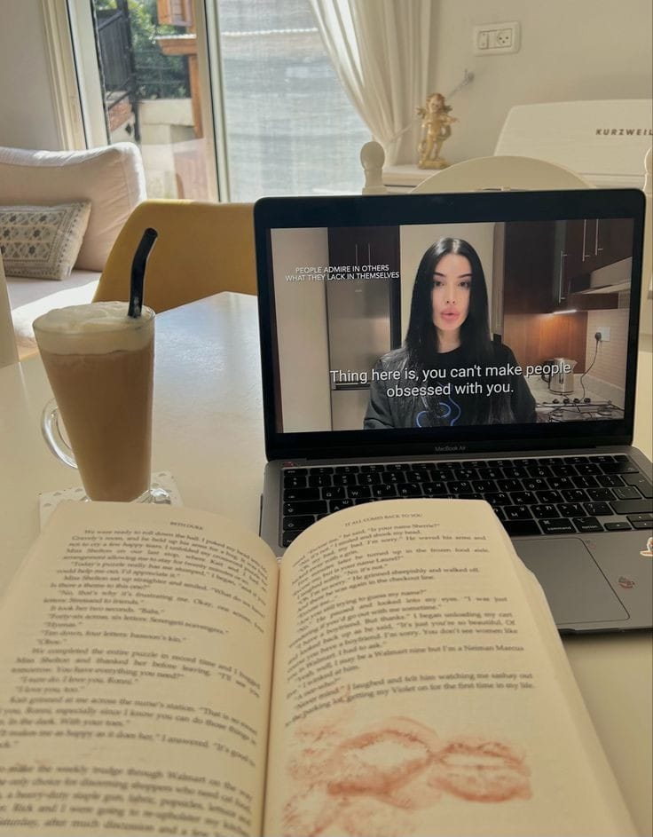

About Me
Hello! My name is Rafaela, and I am currently pursuing a degree in Informatics. Technology and innovation have always intrigued me, and studying Informatics allows me to dive into the heart of this rapidly evolving field. I am particularly passionate about coding, data analysis, and understanding how technology can solve real-world problems. But my interests do not stop there. I am also an avid reader and writer, with a deep appreciation for the power of words. Whether it is getting lost in a captivating novel, exploring the latest non-fiction, or writing my own thoughts and stories, I find that reading and writing offer a wonderful balance to the technical world of Informatics. They allow me to explore new perspectives, think critically, and express ideas creatively. I believe that my passion for both technology and literature gives me a unique edge. It helps me approach complex problems with a creative mindset, and it enhances my ability to communicate technical concepts in a way that is clear and engaging. I am always looking for ways to blend these interests, whether it is through technical writing, blogging about my academic journey, or simply enjoying a good book in my free time. As I continue my studies, I am excited about the possibility of merging these passions even further—perhaps through a career that involves both tech and writing, or by contributing to projects that require a combination of analytical thinking and creative communication. I am eager to learn, grow, and explore where this journey will take me.
Educational Background
Elementary School
- School Name : SDN Blimbing 2
- City : Jombang
- Year : 2010 - 2016
Middle School
- School Name : SMPN 6 Mojokerto
- City : Mojokerto
- Year : 2016 - 2019
High School
- School Name : SMAN 2 Mojokerto
- City : Mojokerto
- Year : 2019 - 2022
University
- University Name : Sepuluh Nopember Institute of Technology
- City : Surabaya
- Year : 2023 - Present
Achievements
| Competition Name | Award | Year |
|---|---|---|
| Cerdas Cermat | 3nd Place | 2021 |
| Menulis Cerpen | 3rd Place | 2021 |
| Menulis Esai | 3rd Place | 2022 |
Hobies and Interest
Reading books is a cherished hobby of mine, as it offers a gateway to new worlds and ideas. I enjoy delving into various genres, from classic literature to contemporary fiction and non-fiction. Each book provides a unique journey, expanding my knowledge and enhancing my analytical skills. Through reading, I continuously engage with different viewpoints and develop a deeper understanding of the human experience.
I have a deep passion for listening or watching to podcasts, which provides me with endless knowledge and inspiration. Whether it is a motivational talk, an insightful interview, or an in-depth exploration of a complex topic, I appreciate the diverse perspectives and valuable lessons that podcasts offer. This hobby allows me to grow and engage with important ideas, enriching my life with wisdom and meaningful insights.
